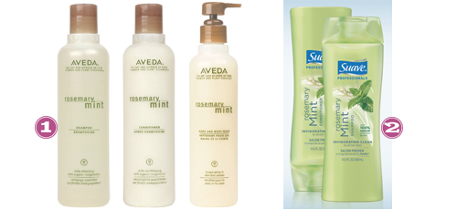

With so many holiday events coming up, I need some soft, shiny and manageable hair. Since having my bambino, I’m not sure what the dealio is but my skin and hair are as dry as the Sahara dessert. Shuga aerosol leave in conditioner is my new favorite hair product. I used this before when I was participating in a bleach blonde look that left my hair straw-like and thirsty. So, I knew exactly what to turn to when I was in need this time. My favorite part of this product is how multi functional it is. Spray it on pre- blowdry, pre- flat iron or post styling to cure winter static. Plus, it’s super light and won’t weigh the finest hair down and smells like shuga’ cookies too.
Etsy Spotlight: Janine Basil
November 9, 2010 by
We just got details for my husband’s company holiday party. The invite said wear your best FESTIVE attire….which to my husband means this (awful, and what’s worse is that if I egged him on he’d probably wear it) but to me means these fun fascinators. LOVE THEM! They all came from Janine Basil’s Etsy Shop. Go check this shop out, there’s tons of cuteness!
Tipsy Favs: Hair “Stuff”
October 5, 2010 by
You’ve heard the old school saying, “A woman’s hair is her crowning glory.” HAHAHAHA…I’m not saying that’s a fact, but I do know that almost all women have their favorite hair “stuff”, be it a product or an accessory.
Here are our favs, what are yours?
- AK, Scunci No-slip Grip Flat Headwraps: I don’t generally wear hair accessories and I don’t think I’m devoted to a product as much as Melis is but I do have one hair item that I wear without a doubt during all my workouts and it’s this no slip grip headband. I can’t stand to have hair in my eyes when I’m working out and these babies definitely do the trick and stay put!
- Melis, Biolage by Matrix Hydro-Foaming Styler: I use hair mouse EVERY SINGLE DAY. If I don’t, my hair sticks to my head and I look bald. Trust me, It’s not a pretty sight. I can’t even put my hair in a ponytail without mouse, its that bad. I have used many different volumizing mouses in my life, and this is by far my favorite. It gives a lot of volume but it doesn’t make my hair stiff. Not to mention it smells A-mazing.
- Sarah, Goody Ouchless Elastics: I’m a ponytail girl true and through…they’re easy, fast, can be cute, and it gives me an alternative to washing and styling my hair every single day! These are my go-to pony tail holders because they’re big enough to hold my massive amounts of hair without damaging it.
- Court, Frizz-Ease Hair Serum: This is the OG of products for me, but its stayed an ol’ faithful for me. I always have a three step process for my curls that begins with a serum and this legend always makes its way in the mix.
Holy Hair Powder
October 4, 2010 by
I have a confession.
I have thin hair. I pretty much have no more hair on my head now than what God gave me the day I entered this world. That being said, I have found the holy grail of hair products. Schwarkopf Osis Dust It Mattifying Powder (I just call it Osis because I can’t say that word either 🙂 ). You just sprinkle a little on your roots, tease it with your fingers, and you have volume. Its a miracle.
If I want to get really crazy, I use Dust It along with Redkin Wool Shake that Sarah mentioned before. Talk about volume…
Hair be Gone
September 23, 2010 by
(Taboo subject ahead)
I was born with a lot of hair…especially on my head (which is good), but also when it came to ‘brows and my lip (which is not so good). Thankfully, my Mom recognized at en early age that it just wasn’t fair for her gorgeous daughter to be walking around with a unibrow so I began getting my ‘brows and lip waxed at the tender age of 13…THANK YOU MOM!!!!!
I still go and get waxed every 6 to 8 weeks, but when life gets a little hectic, Sally Hanson Wax Strips are the bomb! I only use them to keep my lip fuzz free, but you can also use them for any type of unwanted hair situation…then also hurt a lot less than the hot wax, which is another bonus.
Your Hair is Inexplicable
September 2, 2010 by
I’ve been having a bad hair summer. It’s been ferociously hot and humid here…more so than years past. And I have wavy, coarse hair, and of course I try and straighten it and it just frizzes right out when I walk outside. It’s much happier in the winter.
So I decided to change up my hair products to see what I can do and here is what I’m working with now:
- Avon Lotus Shield-Sarah over at Hair Thursday introduced me to this and this is what I had to say about it.
- Osis Flattening Liquid-The lady that cuts my hair introduced this to me. I had been using Chi Straight Guard and felt like it was weighing my hair down a bit much. She told me that I needed different products in different weather. This flattening liquid is like a very lightweight gel as opposed to a creme.
- Paul Mitchell Hot Off the Press-I alternate between this and some other thermal guard sprays before I straighten my hair and this one seems to be working at the moment.
Grass is Always Greener
August 26, 2010 by
You know how you always want what you can’t have? Well, for me that is a pixie haircut. I have long since LOVED them… like could look at them for hours, but I just don’t think I could a) ever pull it off or b) stay married to my longer hair loving husband if I came home with less hair than him. All kidding aside, I really just have never had the guts to go through with it and maybe one day I will. Until then, I’ll just admire them from afar and force you to as well.
- Keira Knightley
- Katie Holmes
- Halle Berry
- Sienna Miller
- Zoe McLellan– This is probably my absolute fav.. god, I miss Dirty Sexy Money!
- Rhianna
photos courtesy of imdb.com
Someone Help Me
July 6, 2010 by
Learn how to use this product…
I bought this product on a whim during a trip to my local beauty store, but I still haven’t figured out it’s best use or really HOW to use it. I will say that the few times I have used it, I have GIANT hair, which is actually OK by me, but I need a hair expert (or just someone that is really good with hair) to help me out….PLEASE!?!?!?
Flower Girl
June 17, 2010 by
I like playing around with different hair looks: whether it be a cut, color or accessories. I haven’t been doing much in the way of color since being preggos (hello natural color that I haven’t seen in 10 years) and in an attempt to grow my hair slightly… the cutting has not been so exciting either. Enter hair flowers. There are endless cute styles that are so summery and romantic with the right placement of a teensy flower. Check it out for yourself.
- Etsy, Sugar Flowers Red
- Etsy, Daydreamer Ivory Flower Set
- Etsy, Pink Tiger Lilly Floral Clip
- Etsy, Kerry Anne Purple
- Etsy, Couture Silk Grand Orange Daisy Flower
- Etsy, Pink and Purple Orchid Barrette
- Etsy, Handmade Hairpin and Clip
- Etsy, Lime Green Double Flower Headband
Rosemary Mint Euphoria
May 19, 2010 by
On our wedding night we stayed at a cute little Houston boutique hotel. And while your wedding night is special in so many ways, I fondly look upon that night and that hotel for the toiletry products that were available to me. Oh, the clean, invigorating feeling these products left me with after a long night of dancing and nervous sweating! I was in heaven, I tell ya. Well, Aveda was the maker of these wonderous Rosemary Mint products, but imagine my surprise when I see a budget friendly version at my local Wally World. I’m 100% smitten.

- Aveda, Rosemary Mint
- Suave, Rosemary Mint


{kind=link}
{kind=link}
{kind=link}
Recent Comments